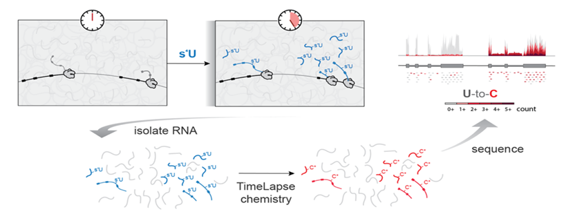

Nucleotide recoding RNA-seq (NR-seq; SLAM-seq, TimeLapse-seq, TUC-seq, etc.), is a set of methods to probe the dynamics of RNA. These methods use metabolic labeling. In this case, metabolic labeling means treating cells with a molecule that looks like a regular nucleotide (e.g., 4-thiouridine, or s4U), which cells incorporate into nascent RNA. NR-seq then employs a chemistry to modify the metabolic label so that a reverse transcriptase identifies it as a nucleotide different from what it originally mimiced (e.g., recoding s4U as a cytosine analog). This allows label incorporation events to be bioinformatically detected as apparent mutations in aligned sequencing reads.
This post introduces the main ideas behind the modeling of NR-seq data.
A brief introduction to NR-seq

Developing a mechanistic understanding of gene expression regulation requires methods to probe the kinetics of RNA synthesis, processing, and degradation. While standard RNA-seq begins to solve this problem, it provides limited information about the kinetics of the processes which determine an RNA’s abundance. Nucleotide recoding RNA-seq (NR-seq; TimeLapse-seq, SLAM-seq, TUC-seq, etc.) overcomes these limitations. NR-seq combines metabolic labeling with novel chemistries that recode the hydrogen bonding pattern of a metabolic label so as to facilitate detection of labeled RNA via these chemically induced mutations in sequencing reads, absolving the need for biochemical enrichment of labeled RNA. By providing information about both overall RNA abundance and the dynamics of nascent and pre-existing RNA, NR-seq resolves the kinetic ambiguities of standard RNA-seq.
One way to intuit how metabolic labeling provides information about the dynamics of RNA is to consider one of the populations being tracked: the old, unlabeled RNA. Since this RNA can only degrade, its dynamics are entirely determined by its turnover kinetics. Combining this with the abundance information provided by standard RNA-seq provides information about the RNA’s synthesis kinetics (transcription + processing).
Understanding NR-seq by simulating NR-seq
Here, we will walk through a basic simulation of NR-seq data to give you a sense as to how to think about and interpret NR-seq data.
The full shebang
Below is a summary of the entire simulation which we will walk through piece by piece in the following sections.
Mutable nucleotide content
Different RNAs have different nucleotide content. Sequencing reads in standard short read sequencing experiments typically only sample a small portion of the entire RNA, and thus reads from a given species of RNA will also vary in their nucleotide content. In a standard NR-seq experiments, uridines in an RNA synthesized in the presence of metabolic label have an opportunity to be replaced with s4U. This, we need to simulate the number of Us in each read (prior to nucleotide recoding). Since we typically sequence cDNA, and this is also best thought as the number of Ts in the genomic sequence to which a given read aligned, we will refer to this as the number of T’s.
Let’s consider simulating sequencing reads from a specific RNA species (e.g., a particular transcript isoform) first. In this case, the RNA will have a particular U-content, i.e., the fraction of nucleotides in its exonic sequence that are U’s. This is a simulation parameter, along with the number of reads we want to simulate, and the length of each read. It’s simplest to assume that each nucleotide in a read has some set probability of being a U, and that this probability is the same for all nucleotides. In this case, we can draw the number of U’s (or cDNA T’s) from a binomial distribution:
Mutational content
The number of mutations in an NR-seq sequencing read provides the information necessary to classify it as having come from either labeled or unlabeled RNA. If a read is from labeled RNA (or RNA that was synthesized during the label time; a given RNA molecule may not incorporate any metabolic label even if it could have), the mutational content of that read is a function of the following things:
- How many mutable nucleotides are contained in the read, which we simulated above.
- How often the metabolic label is incorporated in place of the standard nucleotide. We will also lump into this term the chemical efficiency of recoding, which is usually pretty high (> 80%).
- The background mutation rate, due to sequencing/RT/PCR errors, alignment errors, SNPs, etc.
We’ve already simulated the first factor. The other two are parameters that we will include in our simulation. Incorporation rates in successful NR-seq experiments are typically around 5%, and background mutation rates can range from nearly 0% to around 0.4%, depending on a number of factors. 0.2% is a fairly typical background mutation rate in my experience.
Finally though, we need to determine the “newness” status of each sequencing read. Each species of RNA will have a characteristic “fraction new”, which is the fraction of RNA molecules present at RNA extraction time that were exposed to metabolic label. We can then model sequencing reads as being randomly drawn from this pool, with fraction new probability of sampling a labeled RNA. These processess are all well modeled with binomial distributions, so simulating all of this looks like:
Some observations from the above visualizations:
- Some reads from unlabeled RNA have mutations. This is due to the non-zero background mutation rate.
- Some reads from labeled RNA have no mutations. This is due to the incorporation rate being much less than 100%. Experimentally, this is due to the metabolic label having to compete with the regular nucleotide for incorporation into nascent RNA.
These observations are what make analyzing NR-seq data challenging, and what will motivate analysis strategies discussed in other posts.
RNA kinetics and NR-seq
Different transcript isoforms can have very different properties. Of importance to an NR-seq experiment, different isoforms can differ in their nucleotide content and turnover kinetics. The latter’s impact is obvious, but my reason for bringing up the former may not be. In short, the rate at which a given isoform is degraded will determine its fraction new.
To see why turnover kinetics of RNA influences NR-seq data, consider the following model:
In it, RNA’s are synthesized at some rate ksyn, and degraded with a rate constant kdeg. kdeg is related to the average lifetime of a given RNA. When the rate at which a given species of RNA is degraded (kdeg * the amount of RNA that exists to be degraded) is equal to the rate at which it is synthesized (ksyn), that RNA is said to be at steady-state. A bit of algebra reveals that this occurs when the levels of RNA are equal to ratio of the synthesis and degradation rate constants:
\[ \begin{aligned} \text{ksyn} & = \text{kdeg}*[\text{RNA}]_{\text{ss}} \\ \frac{\text{ksyn}}{\text{kdeg}} & = [\text{RNA}]_{\text{ss}} \end{aligned} \]
When you add metabolic label, you effectively create two species of RNA with distinct dynamics:
- Old RNA that existed at the time of labeling. These can only degrade and are no longer synthesized. In this model, this means that they exponentially degrade with rate constant kdeg.
- New RNA that is synthesized during labeling. These will slowly accumulate to steady-state levels as they are both synthesized and degraded.
Assuming that the synthesis and degradation rate constants are constant throughout the label time, the dynamics of old and new RNA looks like:
Because the rate constants are unchanging, so is the total amount of RNA at any given time. Thus, the amount of Old RNA + New RNA = steady-state RNA level. Because of this, there is a simple relationship between the turnover kinetics of an RNA and the fraction new (abbreviated fn) for that RNA:
\[ \begin{aligned} \text{fn} &= \frac{[\text{New RNA}]}{[\text{RNA}]} \\ \text{fn} &= \frac{[\text{RNA}]_{\text{ss}}\ast(1 - e^{-\text{kdeg}\ast \text{tl}})}{[\text{RNA}]_{\text{ss}}} \\ \text{fn} &= 1 - e^{-\text{kdeg}\ast \text{tl}} \end{aligned} \] where tl is the amount of time for which the cells were labeled. This simple relationship reveals some of the power of NR-seq. NR-seq provides information about RNA kinetics inaccessible to analyses of standard RNA-seq data (i.e., read counts). We can also use this relationship to modify our simulation and set the more biologically interpretable degradation rate constant rather than the fraction new:
Simulating multiple transcripts
So far, we have focused on simulating data for a single transcript. In actuality, NR-seq is a high throughput method that provides information about all of the appreciably expressed transcripts in the cells from which you extracted RNA. Thus, we can set the number of transcripts we would like to simulate, and then draw kinetic parameters from a chosen distribution.
One thing we need to consider though is how the rate constants give rise to expected read counts for each transcript. We have discussed how the steady-state levels of a given RNA are a function of its synthesis and degradation rate constants, but is an RNA’s abundance related to its RNA-seq coverage?
The answer comes from realizing that RNA-seq is a measure of relative RNA abundance, not absolute abundance. That is, the number of reads you get from an RNA is a function of how abundant that RNA is, relative to all other RNAs in the sequenced pool. In addition, abundance in this setting is a function not only of the molecular abundance of an RNA (i.e., the number of molecules of that RNA present in the average cell), but also of the length of the RNA. This is because we are sequencing short fragments of an RNA, and thus the probability that we sequence a fragment from a given RNA depends on how many fragments in our pool come from that RNA. This is roughly \([\text{RNA}]_{\text{ss}} \ast \text{Length}\). In this simulation, we will make the simplifying assumption that all transcripts are the same length, and will thus only need to consider the relative steady-state abundances of each RNA. Thus, the parameters that we need to set are:
- Those determining the rate constant distributions from which we sample transcript-specific ksyn’s and kdeg’s.
- The total number of reads in our library. These will be randomly divided among the various simulated transcripts.
- Those determining the U-content distribution from which we sapmle transcript-specific U-content’s.
Deciding 1) and 3) is often best done through comparing candidate distributions to real data, and choosing parameters that make the simulated data look as close to the real data as possible. The result of this may look like:
Summary
In this post, we introduced NR-seq, and built a simulation of NR-seq data to explore several aspects of NR-seq data. In the next post, we will discuss various strategies for analyzing this data, using the simulation we built here to test our strategies.